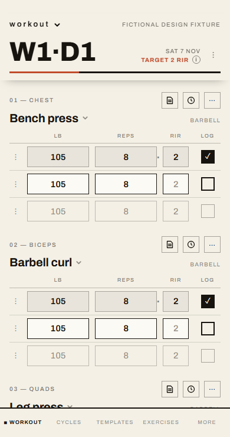
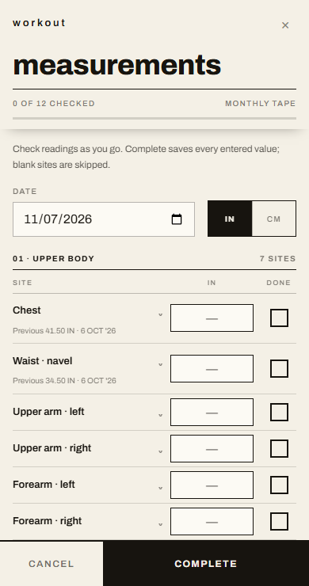
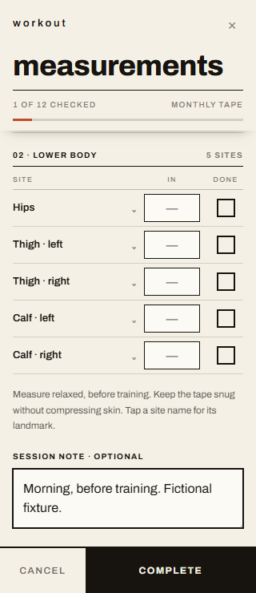
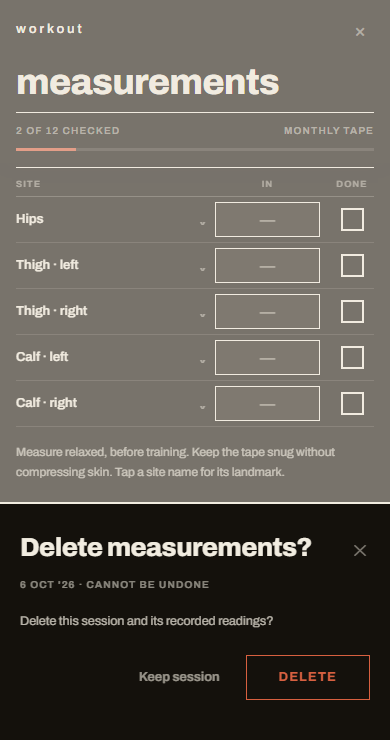

7 November 2026. Actual DayView and Measurements components rendered locally with fictional fixtures, at 390×740 CSS pixels. These captures show the current ledger implementation, not the legacy app screenshot. Both active input cells measure 105×35px and use identical styles; both bottom bars end at viewport y=740. All sites are optional, and Complete saves entered values independently of checklist marks.




Keyboard viewport geometry is simulated. Physical iOS keyboard/zoom and hosted signed-in save/delete remain unverified pending access. No owner's health data is pictured.